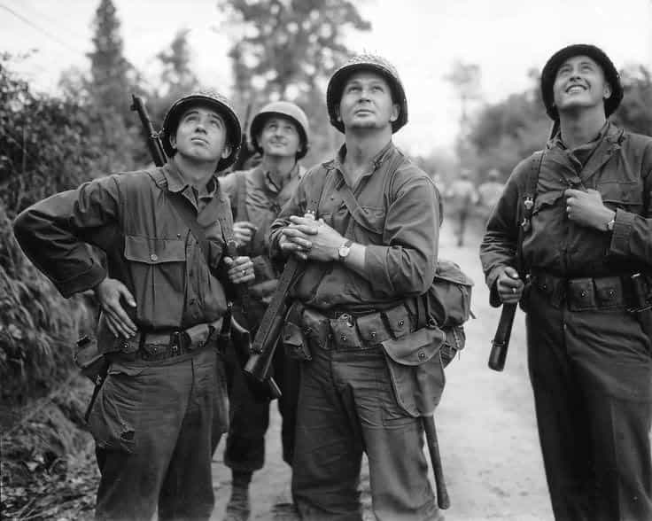
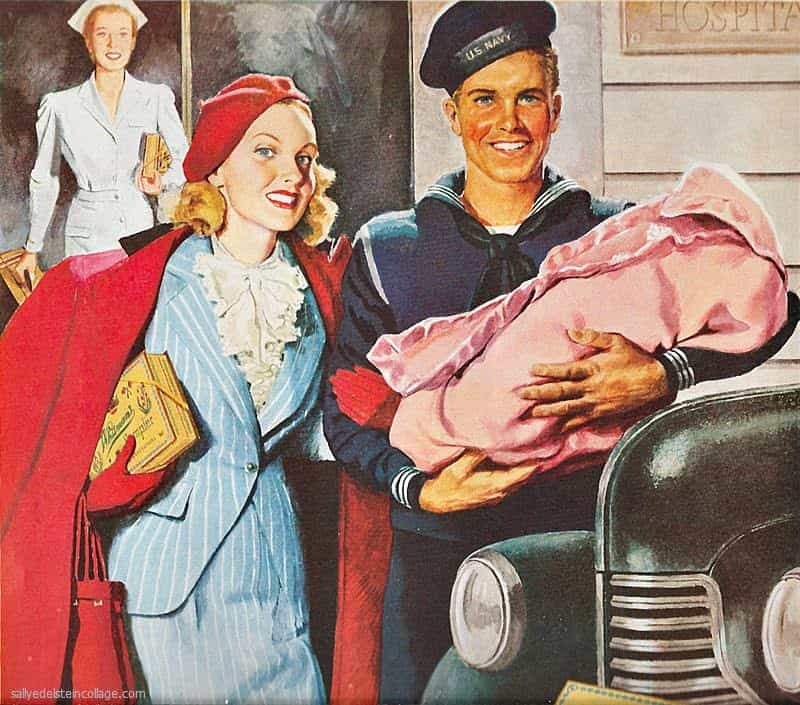
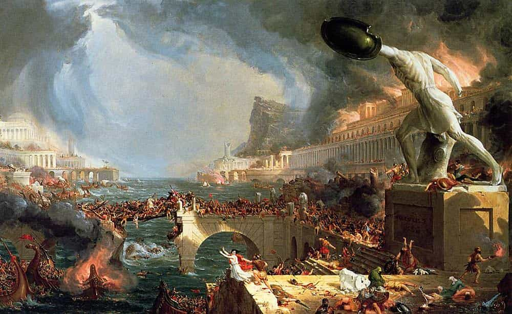
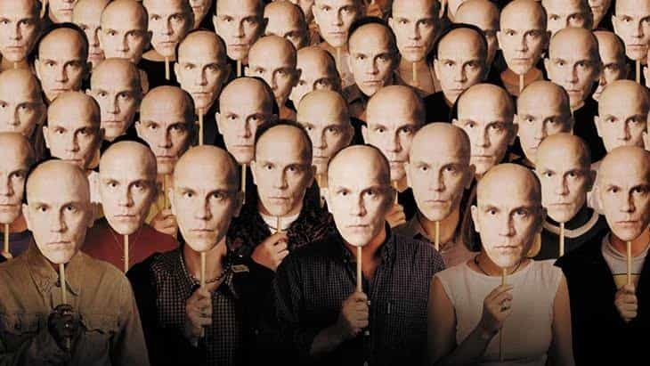

Nick Sinko is a proud western chauvinist who refuses to apologize for creating the modern world. He is the publisher of Right Wing Magazine. You can also follow him on Twitter.


Every generation has some defining characteristics within which they see the world, and the role they played (or will play) in the theater of ideas that writes our history.
First we have the greatest generation who grew up during the deprivation of the Great Depression, and whom went on to fight and destroy out-of-control fascist governments during WW2. Then, at the end of the day, they came home and built America into an economic powerhouse.

We then had the Baby Boomer generation which was a result of the Greatest Generation coming home from war, building businesses, and picking up a woman to start a family with. These kids grew up in the patriotic, conservative, and chauvinistic world the patriarchs of the Greatest Generation created.
When the 1960’s rolled around, Jewish intellectuals from the Frankfurt School decided to pivot away from the ideology of the bourgeois vs the proletariat and adopt a new way to sell Marxism to the West. And so identity politics were born. It was the rich vs the poor, the haves vs the have nots, capitalism vs communism.

Hippies began to spread this anti-capitalist, anti-West ideology into the popular culture through music and arts. By the end oft he 1960’s, the baby boomers had successfully swung the pendulum the other direction from the post-war American pride of their fathers.
Generation X was born during this now popular culture of post-modernist, Marxist thinking. Since the hippies were now having kids of their own, they could mold them to the idealistic image of progressiveness they saw in their ideology. They raised their children to be critical of the West, and to have a distrust of the institutions their grandfathers had built. These kids had no reason to object, as they were growing up in a time of relative economic ease and were still riding the wave of the post-WW2 America built by their grandfathers. They had it both ways for a long time. The millennial generation, whose birth was just around the corner, were about to inherit a West so damaged that many have asserted would be impossible to recover.
National debt began to rise in the late 90’s early 2000’s. Terrorism became a real threat after September 11, 2001. Liberal policies caused the biggest economic disaster since the Great Depression when the housing bubble burst in 2008. Since then, national debt has continued to skyrocket, illegal immigrants have begun swarming, and wages have stagnated.
Businesses under the stranglehold of high taxes, intrusive bureaucracy, and red tape are beginning to close their doors. Factories moved over seas in search of cheaper labor as the result of poorly negotiated trade deals which saw American nationalism taking a back seat. Even though we were hurting worse every year, our parents incessant liberalism kept trying to solve a problem by throwing more and more money at it. The answer was always more government, more control.
The counter culture of the 1960’s had become the dominant culture, and was quickly destroying everything the Greatest Generation had built. What our parents lacked was the context and experience that their grandparents had. Their grandparents knew that Western civilization was superior and must be protected, but their kids took it for granted and unknowingly allowed the dominoes to begin falling.

We have inherited a broken West. Communism is knocking on our door yet again, cultural Marxism has infiltrated the roots of our educational institutions, resentment for capitalism is growing, and the left has taken their post-modern identity politics to the extreme. The salt in the wound is that the only ones who can save the west, millennial men, have been emasculated by feminism and are lost in a crisis of identity.
The good news is that there is a cure. The damage is severe, but we are not past the point of no return. Even in the face of what seems to be insurmountable adversity, anger is always more useful than despair. Here are five ways we can turn the ship around before we sail over the edge entirely.
The Western world is the greatest civilization humanity has ever seen. Our culture is not only different from other cultures, it is superior. As millennial men, we have been handed the reigns to the pinnacle achievement of the human race. Thousands of years of trial-and-error have lead to this very moment, but in the war of ideas, we cannot become complacent. This begins with acknowledging exactly what we have inherited, and having the intellectual and historical context to understand its value. Nowhere else in the world is there the opportunity, freedom, life expectancy, productivity, advancement, or industriousness that there is in the West. We must protect it.
There is a war of ideas happening as we speak, and the egalitarian idealists on the left are attempting to institute a philosophy which holds that the West is somehow the enemy by spreading lies like “the West is destroying the planet with our pollution”, “we are oppressing minorities through capitalism”, and that “the patriarchy itself is an evil that is to be destroyed”. We must reject this devastating philosophy of destruction, and bring Western patriotism and pride back. When our peers spit on the culture that our forefathers created we must spit back and remind them that everything they enjoy today is a result of Western beliefs and Western philosophies in action.
Part of recognizing that the West is the best is acknowledging the big lie of egalitarianism. All cultures are not equal, all philosophies are not equal, and all people are not equal. To pretend otherwise is to continue digging our own grave. Western ideals have provided mankind with the vessel to accomplish the impossible, to bring order to chaos, and to provide for our advancement like no other society on earth.
The big lie of egalitarianism presumes that all people, cultures, and ideologies are equal and interchangeable. Egalitarianism suggests that the West is not the best, but is only different from other societies. The side effect of egalitarianism is that we have nothing to protect, nothing to pursue, and no greater purpose to strive for. If we are all equal anyways, why bother striving for anything?
If you are looking for chaos and pain, look no further than third world non-Western countries, or anti-Western values through history. From the tribal warfare of Africa to Islamic slaughter in the Middle East or the mass genocide of communism, the alternative to Western civilization is ugly and barbaric.

Know what we’re up against. Research cultural Marxism, the nihilistic and malevolent doctrine of post-modernism, and the slaughters of communism. Gain some perspective by looking back through time and learning about how societies rise and fall. The looking glass of time is cloudy and smudged by default without education, so while we still have time on our side we need to wipe it clean with study and insight.
History is the world’s most effective teacher. Ignorance of the natural laws of chaos and order are not excuses to repeat past mistakes over and over. Hell was once defined as a place where there is no reason, and if we don’t have perspective or an understanding in the war of ideas, we are existing in a state of hell. Knowing why the West is the best, and who the enemy is will better equip us to fight and win.
Freedom of speech means the unlimited freedom of ideas. It is allowing your intellect to flow, and not placing restrictions on the dissemination of ideas. Free speech is the foundation that the West is built on. History is littered with oppressive regimes attempting to quash free speech so they could hold onto power. Evil ideologies cannot prevail unless the truth is hidden.
Make sure that truth is always visible, and speak your mind freely. This is why Jesus said “No one lights a lamp and puts it in a place where it will be hidden, or under a bowl. Instead they put it on its stand, so that those who come in may see the light.” He was referring to the importance of truth.
Learn to debate, and how to persuade others of your position. Speech is your sword in the war of ideas, and if we want to win we must keep them sharp. Always be looking for the truth, especially if it hurts. Truth doesn’t exist to please, it exists to light our path through the chaos of life. Political correctness, as we all know, exists to quash free speech in favor of the doctrine of the left.
However, we need to pay particular attention to definitions. Since the left cannot defy human nature to suppress free speech, they are now trying to hijack and re-frame definitions to suit their movement. This way the speech can continue, but it can serve their purpose. They have redefined words like racist, socialism, radical, and conservative to mean what is convenient to them. Radical used to mean an extreme ideology. Now it means anything that doesn’t tow the post-modernist line.
Go to work for yourself and produce. Create jobs, and create wealth. Enterprise is the engine that keeps the vehicle of the West moving. Men are designed to produce things of value, and to improve the lives of others. If we aren’t producing, we are dying. This is why we are living in an epidemic of identity crisis, drug use, and absentee fathers. When we have no reason to exist, we default to wasting our lives.
Wealth creates the means for positive change, and puts the reigns of the West into the free market – into the hands of the people. If you want to live a meaningful life, and make a lasting impact on our Western society you must generate adequate wealth to do so. A life of poverty doesn’t only short change you with what you could’ve been, but also what everyone else your enterprise could have touched could have been. Entrepreneurs don’t only feed their own families – they also create the means by which others can feed their families.

The solution to our identity crisis as millennial men is recognizing our purpose as a generation. We might not be the greatest generation, but we could prove to be the most important generation. The fate of the West may well lie within our hands. We are about to truly come of age, and take the wheel of Western civilization, so it is up to us whether we continue to steer it off the cliff of chaos, or turn it back towards human greatness.
We must consider our children, and our children’s children. Will they grow up in a culture of lost values, big brother, and nihilistic malevolence? Or will they grow up in the land of opportunity, freedom, and truth. Hard times breed strong men, and strong men breed easy times. Easy times breed weak men, and weak men breed hard times. Knowing this feedback loop is half the battle, and preventing it from poisoning the future is something we will have to figure out.
Read Next: Patriarchal Nationalism: The Only Societal System That Can Save The West